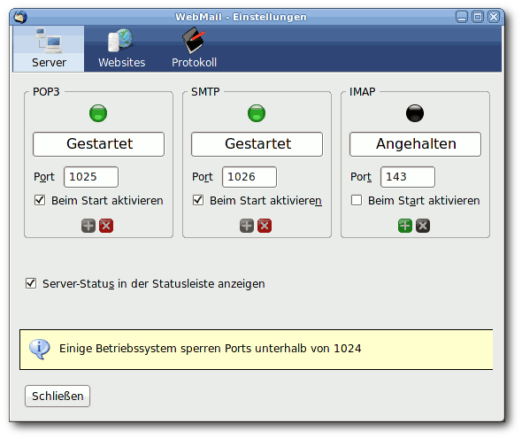
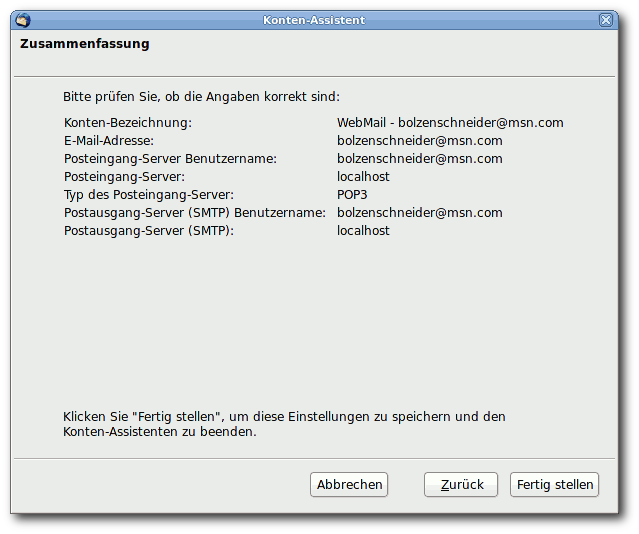

Webmail
Achtung!
Da von Thunderbird unregelmäßig eine neue Version erscheint, kann dieser Artikel leider nicht – wie sonst in diesem Wiki üblich – mit einer bestimmten Ubuntu-Version getestet werden. Die Mozilla-Entwickler behalten sich vor, jederzeit neue Funktionen hinzuzufügen oder vorhandene wieder aus dem Programm zu entfernen. Unter solchen Umständen ist es nicht möglich, die Korrektheit der in diesem Artikel beschriebenen Informationen dauerhaft für eine Ubuntu-Version zu garantieren.
 Manche E-Mail-Provider ermöglichen es leider dem Benutzer nicht oder nur gegen kostenpflichtigen Aufpreis, dessen Konto in herkömmliche E-Mail Programme einzubinden, da sie das POP3-, IMAP- und SMTP-Protokoll nicht nativ unterstützen. Abhilfe schafft eine Erweiterung (engl. Extension) namens Webmail
Manche E-Mail-Provider ermöglichen es leider dem Benutzer nicht oder nur gegen kostenpflichtigen Aufpreis, dessen Konto in herkömmliche E-Mail Programme einzubinden, da sie das POP3-, IMAP- und SMTP-Protokoll nicht nativ unterstützen. Abhilfe schafft eine Erweiterung (engl. Extension) namens Webmail  für Thunderbird, die das Einbinden folgender E-Mail-Provider ermöglicht: Yahoo, MSN/Hotmail, Mail.Com, GoogleMail, Libero und AOL.
für Thunderbird, die das Einbinden folgender E-Mail-Provider ermöglicht: Yahoo, MSN/Hotmail, Mail.Com, GoogleMail, Libero und AOL.
Hinweis:
GoogleMail, Yahoo und Hotmail können inzwischen auch direkt in Thunderbird eingebunden werden:
Für GoogleMail: kann man bei der Kontenerstellung in Thunderbird direkt "Google Mail" auswählen, alles weitere ist anschließend selbsterklärend.
Für Yahoo: kann man unter den Konteneinstellungen Änderungen vornehmen, sodass das Einbinden für POP3 funktioniert. Siehe hierzu folgende Original-Anleitung Yahoo.com
Für Hotmail: die Konteneinstellungen kann man hier ubuntu.com
finden.
Installation¶
Auf der Entwicklerseite http://webmail.mozdev.org wählt man die Kategorie "Download". Hier stehen nun mehrere Dateien, alle mit der Endung .xpi zur Verfügung. Dort lädt man zuerst das oberste, "Webmail" herunter. Nun benötigt man noch die Extension, die das Einbinden des gewünschten Providers ermöglicht. Die Installation mehrerer dieser Pakete ist möglich.
Hinweis:
Klickt man im Mozilla Firefox mit der linken Maustaste auf die Extensions, fragt dieser, ob er sie einbinden soll. Das ist falsch, diese Extensions sind für Thunderbird und nicht für den Browser! Daher muss man sie mit "Rechtsklick->Speichern unter" herunterladen
Nun startet man Thunderbird. Handelt es sich um den ersten Start von Thunderbird, öffnet sich ein Dialog mit "Don't import anything". Hier wird auf "weiter" oder "next" geklickt. Nun öffnet sich der "Konten-Assistent". Dieser muss nun abgebrochen werden, da zuerst die Extensions, wie nun erklärt, installiert werden müssen.
Um nun die Webmail-Extension zu installieren, geht man auf "Extras -> Addons". Dort klickt man auf "Installieren" und wählt die erste heruntergeladene xpi-Extension aus, bestätigt den Dialog und installiert diese. Als nächstes installiert man die Extensions der zu benutzenden Provider auf die gleiche Art und Weise.
Konfiguration¶
Als erstes wird nun Thunderbird gestartet. Nun muss diese Extension konfiguriert werden. Hierfür geht man auf "Extras -> Addons -> Webmail -> Einstellungen" und ändert dort die Ports folgendermaßen, indem man bei
POP den Port von
110in1025SMTP den Port von
25in1026
ändert.

Hinweis:
Bei Ubuntu können Ports bis 1024 nur mit Root-Rechten geöffnet werden. Da die Extension vom Benutzer ausgeführt wird, müssen Ports größer 1024 gewählt werden.
Die Extension öffnet diese Ports nur auf Localhost-Ebene. Daher sind diese nur vom eigenen System zugänglich und stellen somit keine Sicherheitseinschränkung dar.
Nun muss Thunderbird neu-gestartet werden, damit diese Änderungen in Kraft treten. Die Ampeln in der Webmail-Konfiguration müssen jetzt "grün" leuchten.
Einbinden eines Accounts¶
Am Beispiel eines MSN-Accounts wird im Folgenden gezeigt, wie man ein E-Mail-Konto der oben genannten Anbieter in Thunderbird hinzufügt. Man wählt "Bearbeiten -> Konten -> Konto hinzufügen..." aus. Nun wählt man im Dialog "Webmail-Konto" aus. Bei "Namen" gibt man jetzt einen beliebigen Namen ein (eventuell den eigenen) und bei "E-Mail-Adresse" (z.B. maxmustermann@msn.com) die vollständige E-Mail-Adresse. Im Folgenden gibt man bei "Benutzernamen" erneut die vollständige E-Mail-Adresse (z.B. maxmustermann@msn.com) ein. Dann müsste folgendes Abschließende angezeigt werden, wobei bei "Server" "localhost" steht.

Als Letztes muss nun überprüft werden, ob beim SMTP-Versenden der richtige Port eingestellt ist. Man wählt "Bearbeiten -> Konten -> unterhalb des Kontos: Postausgang-Server (SMTP)" aus und schaut ob bei "Webmail - localhost" der Port 1026 ausgewählt ist. Sollte es ein anderer sein, muss hier der richtige eingestellt werden. Möchte man, dass die E-Mails auf dem Server bleiben und nicht beim Herunterladen in Thunderbird gelöscht werden, sollte man darauf achten, dass ein Häkchen bei "Bearbeiten -> Konten -> Server-Einstellungen -> Nachrichten auf dem Server belassen" für das eben erstellte Konto gesetzt ist.
Nutzung¶
Die Nutzung erfolgt nun nach der Passworteingabe wie bei Thunderbird üblich.
 Hauptartikel
Hauptartikel- Erstellt mit Inyoka
-
 2004 – 2017 ubuntuusers.de • Einige Rechte vorbehalten
2004 – 2017 ubuntuusers.de • Einige Rechte vorbehalten
Lizenz • Kontakt • Datenschutz • Impressum • Serverstatus -
Serverhousing gespendet von